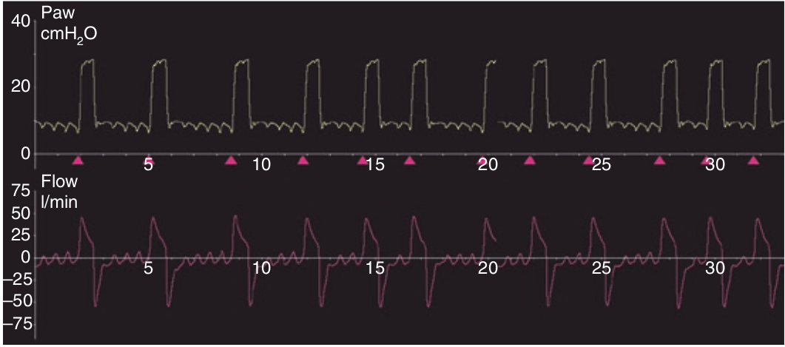

نوسانات در منحنی شدت جریان ناشی از نوسانات قلبی ممکن است با تلاش بی فایده دمی اشتباه شوند. این نوسانات از فرکانس بالا برابر با تعداد ضربان قلب و مدت کوتاه (کمتر از ۰/۳ ثانیه) برخوردارند.

در مورد افتراق نوسانات قلبی از تلاش بی فایده دمی کدام صحیح است؟
۱ - بکرات در زمان بازدم روی میدهند
۲ - امواج ریزی هستند
۳ - تعداد آنها نزدیک ضربان قلب است
۴ - می توانند سبب ترایگر ونتیلاتور شوند
۵ - تمام موارد فوق